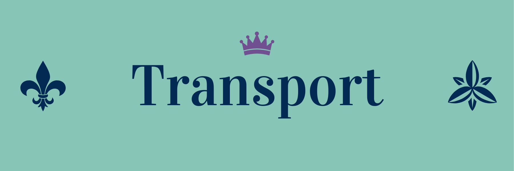

Le transport est coordonné par l’école participante.
L’octroi gouvernemental pour le transport est de 30000$.
Après le 25 mars 2025 (fin des inscriptions), les leaders du RLAC se rencontreront pour discuter de la distribution des argents pour le transport.
Si des questions surgissent d’ici ce temps, veuillez discuter avec
votre représentant ou représentante au Réseau des leaders en animation culturelle.